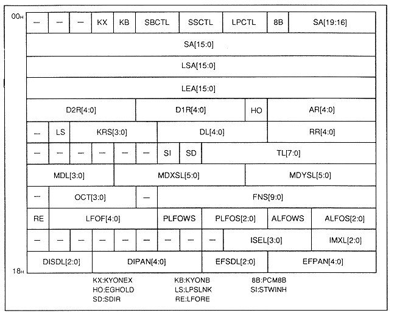

Figure 4.2 Slot-specific control register

Table 4.1 Control register by slot (1)
| Name | Content |
| KYONEX (KX) | KEY_ON execution |
| KYONB (KB) | KEY_ON, KEY_OFF registration |
| SBCTL | Source bit control |
| SSCTL | Sound source control |
| LPCTL | Loop control |
| PCM8B (8B) | Select waveform data word length (format) |
| SA | Start address |
| LSA | Loop start address |